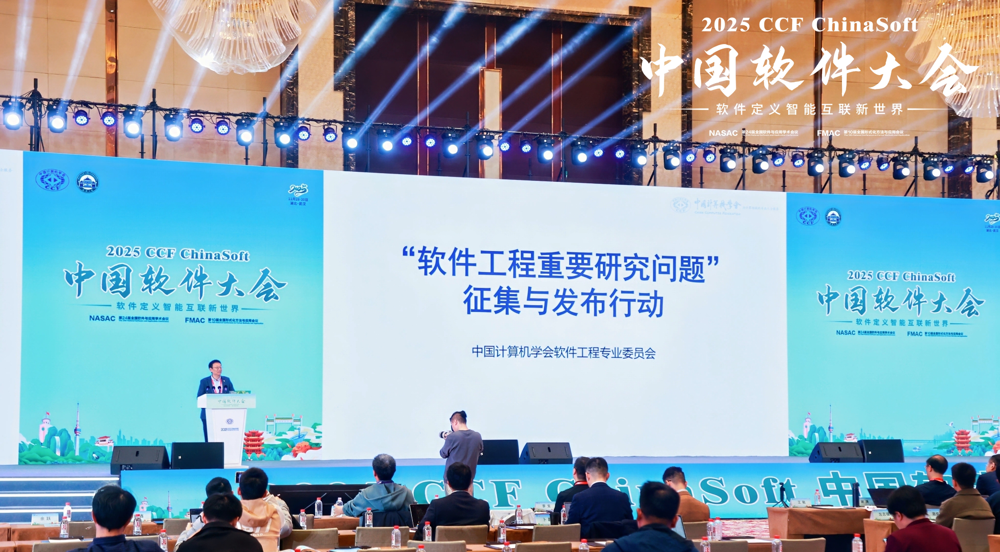
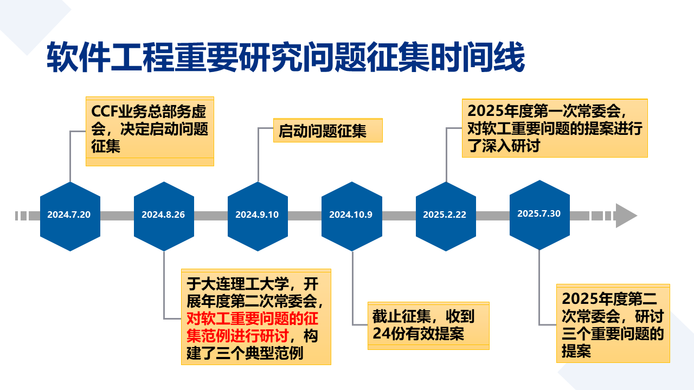

默认视图
背景与动机
工作动机
凸显学术组织定位，凝聚引导学界共识
机制流程
公开征集，反复论证，分批发布
目标效果
推动政企支持，推动社区发展
组织与流程
首届工作组
工作组成员名单
- 1 李宣东
- 2 张东梅
- 3 李戈
- 4 夏鑫
- 5 刘辉
- 6 马晓星

模板与联系方式
软件工程重要问题提议模版
-
问题描述
问题表述：一句话表述问题。尽量不超过30个字。
解释说明：对问题的进一步解释和界定。尽量不超过150字。
研究现状：可选，对该问题研究现状的定性或定量说明。尽量不超过100字。
研究目标：说明判定该问题研究取得成功或重要进展的标准。尽量不超过150字。
-
重要意义对问题重要意义的说明，可分点论述。意义包括学术意义、国家需求、应用价值等一个或多个方面。尽量不超过300字。
-
示例或相关工作给出这个问题上的有代表意义的研究示例或相关工作。可分类说明。尽量不超过300字。
-
参考文献不超过10篇。
-
【提议人】张三、李四
联系人
新提案请通过电子邮件发送给 CCF 软件工程专委秘书处：
Liuhui08@bit.edu.cn
CCF 软件工程委员会在 2025 CCF
中国软件大会闭幕式上正式发布了三个软件工程重要研究问题
- 正在加载已发布问题……